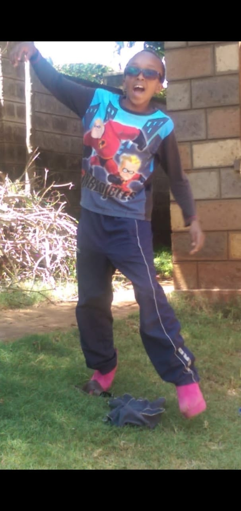

I was born in the year 2002 at Aga-Khan Hospital. I'd say it was all God's plan.I am the lastborn in our family. I was lucky to be born in such a household full of love and really the best of all that i could ask for. Its a miracle and a blessing and so much more than i could ever ask for. My chapter started there.
We live in Runda Nairobi county, such a chill and quiet area. My dad's side is in Kirinyaga county in kutus town while my mom's side is from meru county. It's always a good opportunity to visit their hometowns during the holidays
I have two brothers and one sister. The firstborn is called John who really loves mathematics as i do. The second born is called Eric. He is more into survey and is full of knowledge. My sister is called Nelly. She specializes in IT in business management. They are all super legit.
When it comes to sports, soccer takes the win very easily. I love the sound of te fans chantting my name on the pitch, the intense pressure driving me to score goals for my team and mostly teaamwork. Soccer is a priceless art to me and forever holds a great position in my heart. I play as a left-footed fullback and my favourite team is United.
I also have a spot for music. Its relaxing and a reaaly good way of getting heavy stuff off my mind. I play the Saxophone. Ive done national examinations but only untill grade 2. It really was a good choice.
As a child, i've always grown under the care and protection under my caring parents. But as i've grown up, i've realised that i have to take responsibbility of my own life at some point. I've always wanted to do better, be better than i was a month ago or a year, little progress at a time untill i get where i want.
